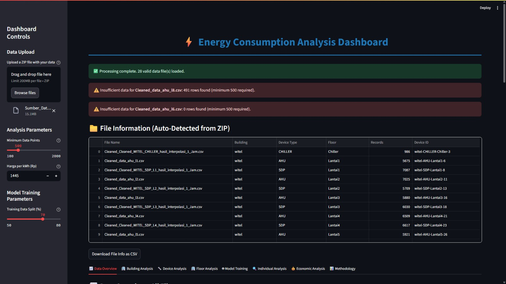
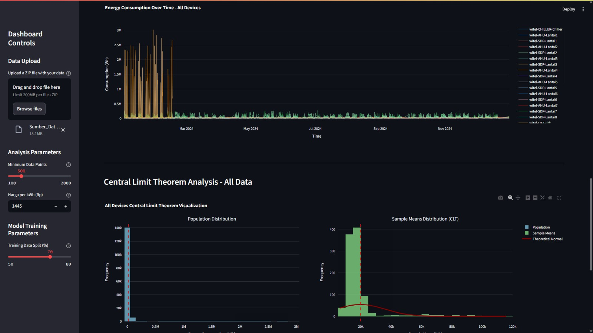
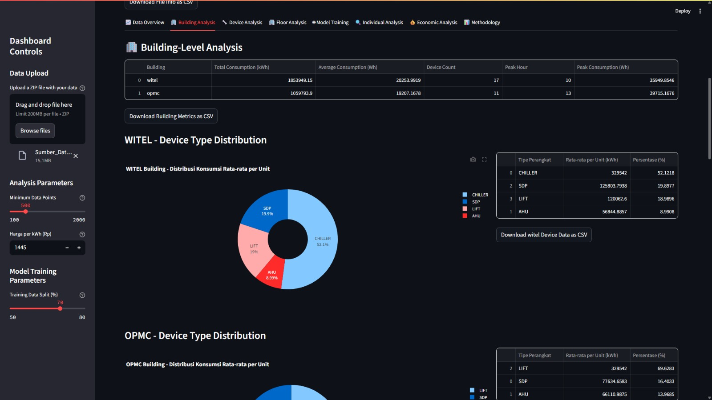
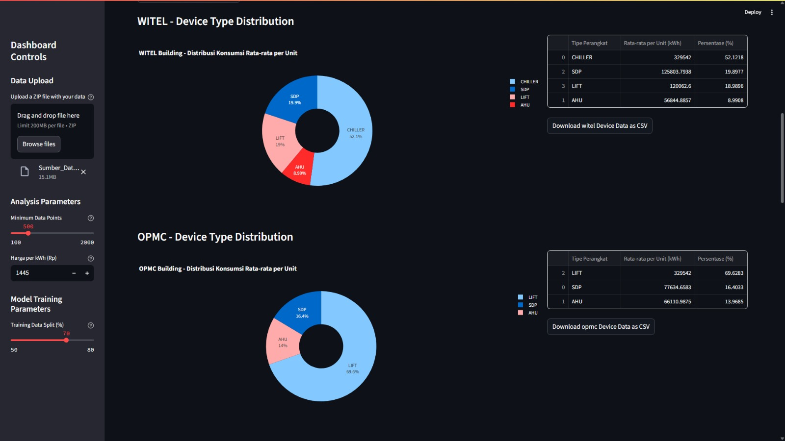
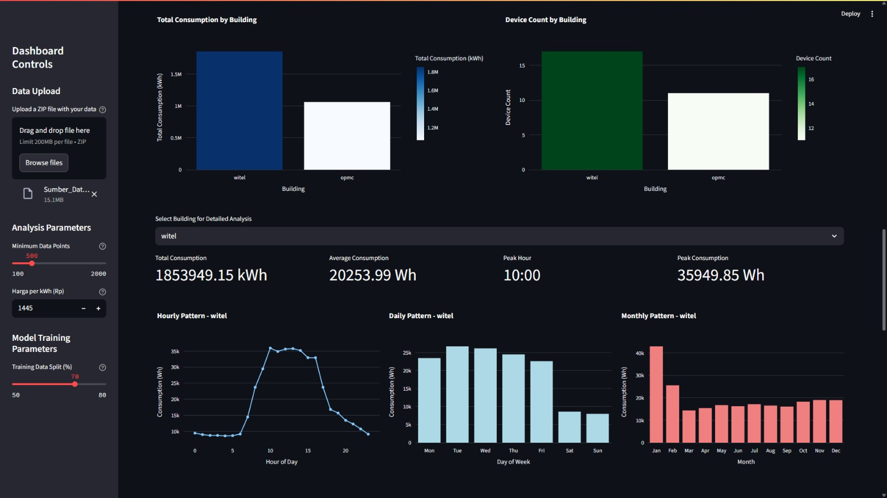
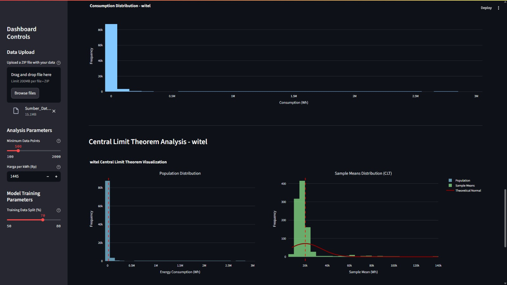
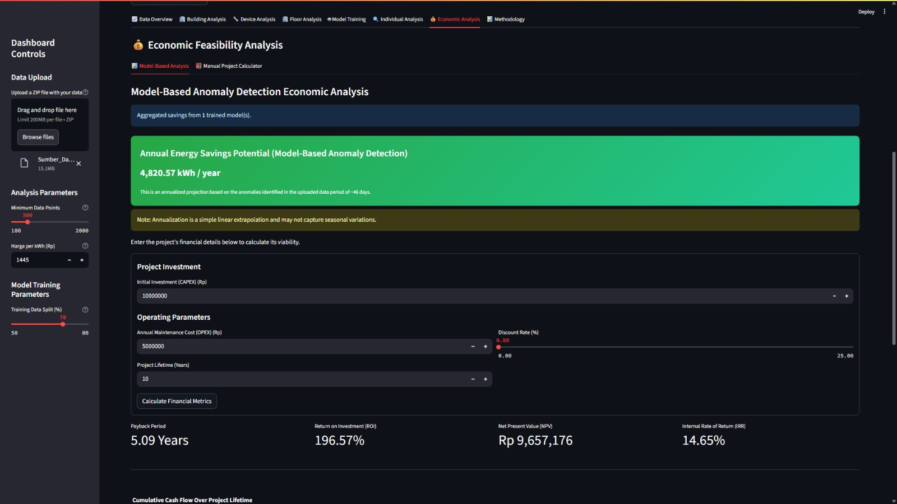
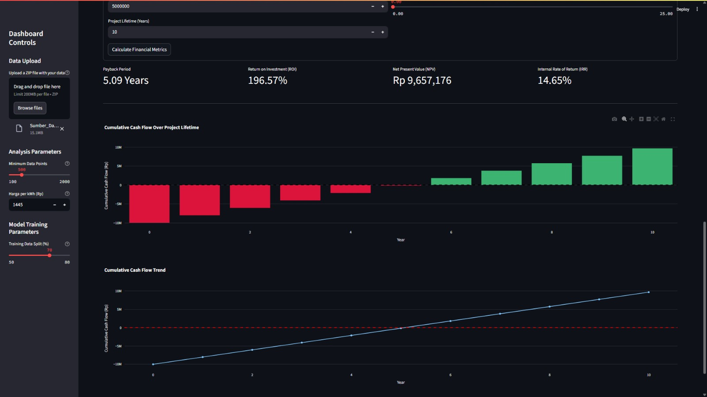

Dashboard Analisis AI Smart Meter
Proyek analisis data end-to-end untuk deteksi anomali konsumsi energi dan analisis tekno-ekonomi menggunakan Python, Machine Learning, dan Streamlit.
Deskripsi Proyek
Proyek ini dikembangkan selama magang saya di Telkom Infranexia sebagai bagian dari analisis tekno-ekonomi untuk manajemen energi di gedung pintar. Tujuannya adalah untuk membangun sebuah sistem cerdas yang mampu menganalisis pola konsumsi energi, mendeteksi anomali (pemborosan), dan memberikan rekomendasi tindakan serta estimasi kelayakan ekonomi dari implementasi AI.
Saya bertanggung jawab penuh atas seluruh siklus hidup proyek data, mulai dari pengumpulan dan pembersihan data mentah smart meter, integrasi dengan data cuaca eksternal, hingga membangun, melatih, dan mengevaluasi beberapa model machine learning (Random Forest, Gradient Boosting, LSTM). Model terbaik kemudian digunakan sebagai dasar untuk deteksi anomali.
Tantangan & Solusi
Tantangan utama adalah mengolah dataset time-series yang besar dengan data yang hilang dan tidak terstruktur. Saya mengatasinya dengan melakukan interpolasi data untuk mengisi kekosongan dan rekayasa fitur (feature engineering) untuk menemukan variabel yang paling berpengaruh. Untuk memvisualisasikan hasil analisis yang kompleks, saya membangun dashboard interaktif menggunakan Streamlit, yang memungkinkan pengguna untuk memfilter data berdasarkan gedung dan perangkat, serta melihat hasil deteksi anomali dan perhitungan ROI secara dinamis.
Teknologi & Metode
Tautan
Lihat Kode di GitHub →Galeri Fitur & Proses Analisis

Dashboard Utama
Antarmuka utama yang menyajikan visualisasi konsumsi energi secara keseluruhan.

Preprocessing: Pemisahan Data
Strukturisasi data mentah berdasarkan gedung dan perangkat untuk analisis terperinci.

Grafik Analisis Konsumsi Energi OverTime
Grafik Analisis Konsumsi Energi Tiap Waktu.

Building Analysis
Tipe Devices di Gedung.

Visualisasi Distribusi Rata rata Devices
Visualisasi Distribusi Rata rata Devices per Unit.

Visualisasi Konsumsi Energi
Tabel hasil kalkulasi total energi yang divisualisasikan.

Distribusi Konsumsi Gedung
Analisa Distribusi Konsumsi Energi.

Analisis Struktur Biaya
Perhitungan detail CAPEX & OPEX sebagai dasar analisis ekonomi.

Analisis Kelayakan Ekonomi
Hasil akhir perhitungan Payback Period dan ROI untuk implementasi sistem AI.